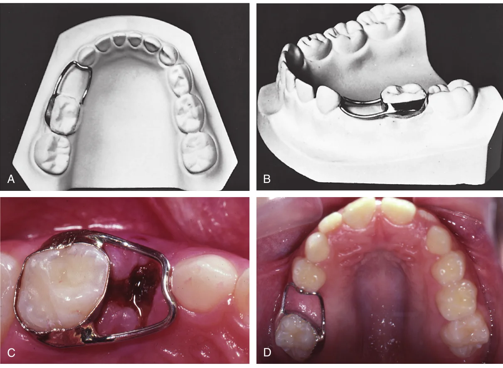

نسخه استخراجشده؛ ترجمه یا تأیید علمی انجام نشده است. وضعیت: captured
چهار دستگاه ثابت رایج، هرکدام برای وضعیتی مشخص:
| دستگاه | کاربرد | نکته |
|---|---|---|
| بند و لوپ | از دست رفتن یک دندان خلفی در یک سمت | ساده و ارزان؛ لوپ استحکام محدودی دارد و فقط فضای یک دندان را نگه میدارد؛ اکلوژن را بازسازی نمیکند |
| لینگوال آرچ | از دست رفتن یک یا چند دندان خلفی، بهویژه دوطرفه | فقط پس از رویش ثنایاهای دائمی؛ در فک بالا فقط وقتی اوربایت عمیق نیست |
| نانس / TPA | فک بالا، وقتی اوربایت عمیق اجازهی لینگوال آرچ را نمیدهد | دکمهی نانس نیازمند پایش بافت پالات است؛ TPA وقتی یک سمت قوس سالم است و در سمت دیگر بیش از یک دندان رفته |
| دیستال شو | از دست رفتن مولر دوم شیری پیش از رویش مولر اول دائمی | تیغهی داخل آلوئول؛ نیازمند احتیاط و پایش |
⚠️ محدودیت لینگوال آرچ را جدی بگیر: جوانهی ثنایاهای دائمی پایین لینگوالِ ثنایاهای شیری است و این دندانها اغلب لینگوالی میرویند؛ لینگوال آرچی که پیش از رویش آنها گذاشته شود، سر راهشان قرار میگیرد. در این سن، اگر یک مولر شیری در هر دو سمت رفته باشد، بهجای لینگوال آرچ از دو بند و لوپ جداگانه استفاده کن و بعداً در صورت نیاز آنها را با یک لینگوال آرچ عوض کن.
💡 دیستال شو تنها دستگاه این فهرست است که تیغهای داخل آلوئول دارد: تیغه حدود ۱ میلیمتر زیر مارجینال ریج مزیال مولر اول دائمیِ رویشنیافته مینشیند و مسیر رویش آن را هدایت میکند. شایعترین مشکلهایش جایگذاری نادرست تیغه و گم شدن دستگاه است، و چون اپیتلیزه شدن کامل اطراف تیغه ثابت نشده، در کودک در معرض اندوکاردیت عفونی یا با نقص ایمنی منع استفاده دارد.
پس از انتخاب نوع، یک تصمیم دیگر باقی میماند: ثابت یا متحرک؟
💡 در کودکان کوچکتر و هر موردی که همکاری قابل اتکا نیست، نگهدارندهی ثابت انتخاب پیشفرض است. یک دستگاه متحرک که در کیف مدرسه میماند، همان اندازه فضا نگه میدارد که هیچ دستگاهی.
👉 استثنای مهم: در قدام، طول قوس معمولاً از دست نمیرود و حفظ فضا لازم نیست؛ وقتی چند دندان قدامی شیری رفتهاند، جایگزینی فقط برای ظاهر است و دستگاه متحرک با دندان مصنوعی مزیتی دارد که هیچ دستگاه ثابتی ندارد. دستگاه متحرک همچنین وقتی چند دندان خلفی در هر دو سمت رفته و ثنایاهای دائمی هنوز نروییدهاند، انتخاب مناسبی است.

نگهدارندهی فضا بیخطر نیست؛ چهار عارضهی شایع را باید پایش کرد:
⚠️ و یک محدودیت ذاتی که باید به والدین هم گفت: نگهدارندهی فضا اکلوژن را بازسازی نمیکند و مانع اکستروژن دندان مقابل نمیشود. فقط فضای افقی را نگه میدارد.
👉 برنامهی پایش را در همان جلسهی گذاشتن تعیین کن: هر ۳ تا ۶ ماه، با رادیوگرافی در صورت لزوم.